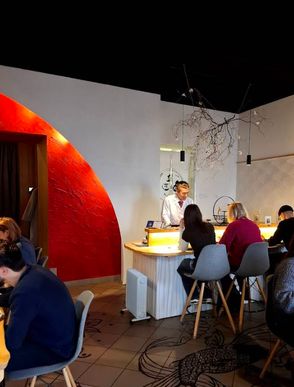
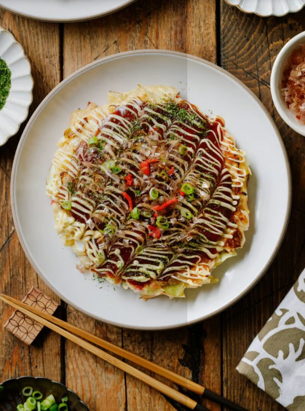
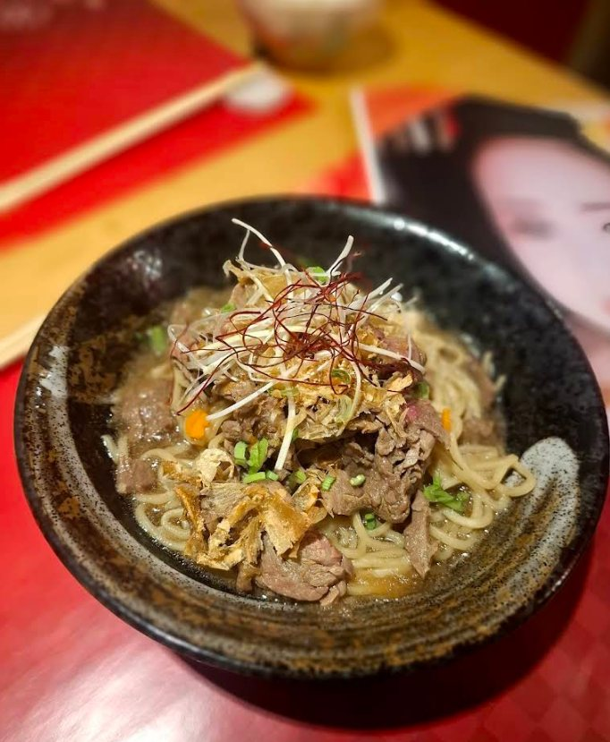
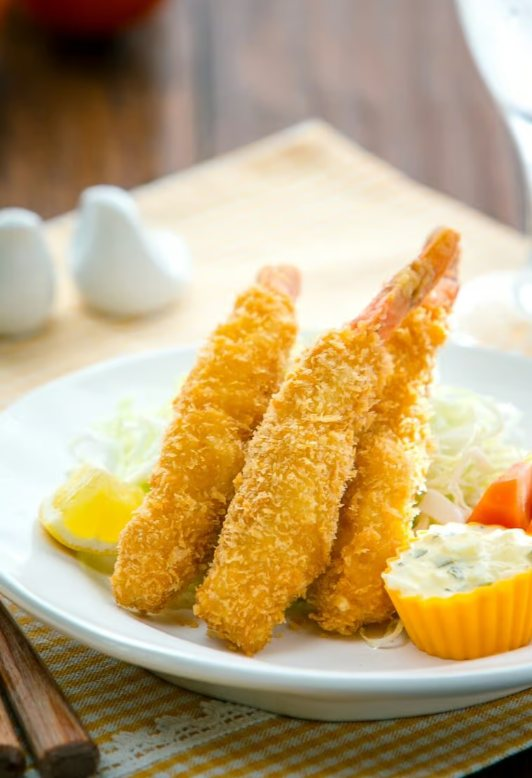
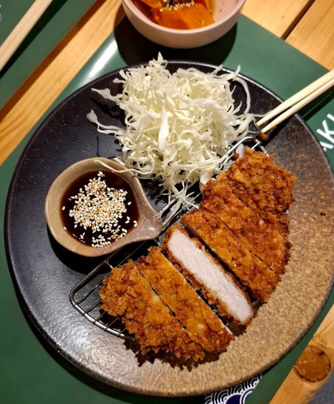
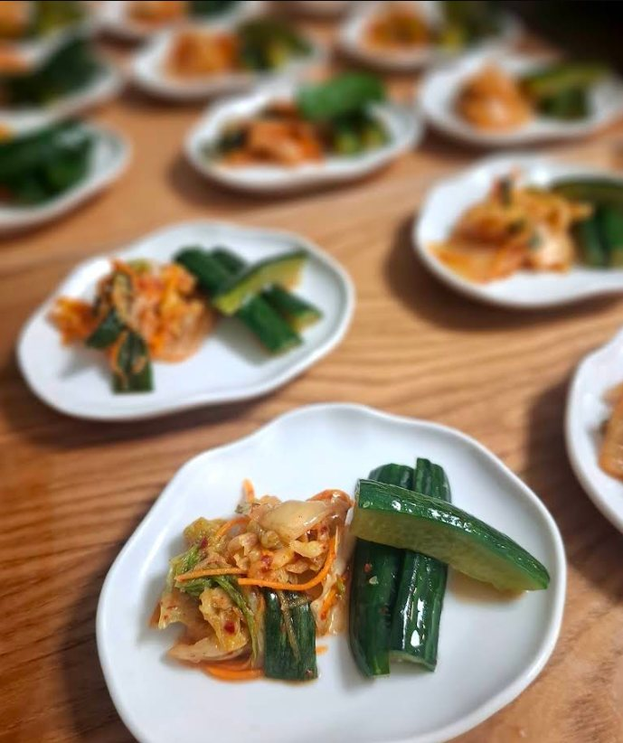
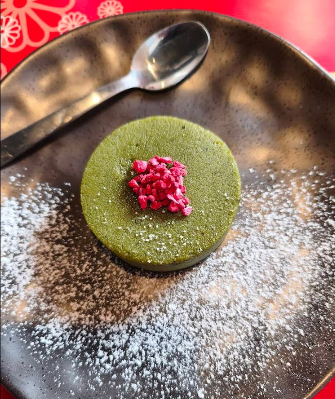

Galeria
Wnętrze, dania i detale AKI.
Zdjęcia pokazują klimat lokalu, najważniejsze dania i kilka detali z karty. Galeria jest krótsza i bardziej selektywna, żeby łatwiej było obejrzeć ją na telefonie.






